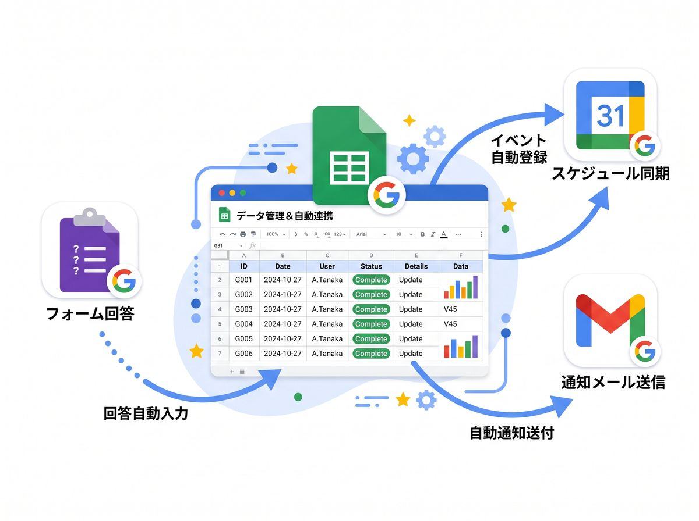

SERVICE
今の運用を大きく変えずに、面倒なところだけ楽にする――を基本方針にしています。
WHAT WE DO
Googleスプレッドシート・GASを中心に、Excel・Access・Python・Windowsアプリまで、業務に合った手段で作ります。料金の目安は料金のページにあります。
必要十分な規模の業務システムを、使う人の手順に合わせて作ります。
毎月の転記・集計・帳票づくりを、ボタン一つで終わるようにします。
「気づいたら対応が遅れていた」をなくす仕組みを作ります。
公開されている情報や外部サービスのデータを定期的に集め、整理します。
作った人がいなくなったマクロやツールを読み解き、直して使い続けられるようにします。
作る前の整理と、作った後に残す文書を引き受けます。
ChatGPT・Claudeなどの生成AIを、判断や文章作成が絡む作業に組み込みます。
納品した後の追加改修や、使い始めのサポートも承ります。
EXPERTISE
電子認証局の運用・タイムスタンプ業務に携わった経験と、自前で運用しているタイムスタンプサービスの知見をもとにご支援します。
当方が運用するタイムスタンプの仕組みとWindows用アプリはプロダクトのページで紹介しています。
TOOLS
今お使いの環境の範囲で完結する形を優先します。新しくソフトやサービスの契約が必要になる場合は、先にご相談します。
※ 現時点では、数百人規模の同時アクセスが発生する基幹システムや、24時間365日のSLA保守契約が必要な大規模開発は対象外としています。

WORKS
作り方と品質の目安として、ソースコードをGitHubで公開しています。